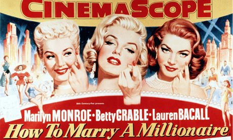
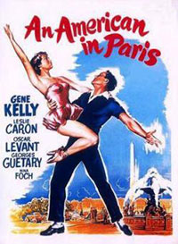
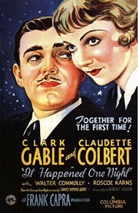

How To Marry A Millionaire 1953
Bus Stop 1956
An American In Paris 1951
Shall We Dance 1937
It Happened One Night 1934
Singin' In The Rain 1952
How to marry a millionaire is a 1953 romance directed by Jean Negulesco,starring Marilyn Monroe,Lauren Bacall and Betty Davis. The story is about three models who move to New York City with only one mission... marry a millionaire!

Bus Stop is a 1956 romance directed by Joshua Logan,starring Marilyn Monroe and Don Murray. The story is about a Cowboy who falls in love with a singer and wants to marry her,but she has different plans.
An American in Paris is a 1951 romance directed by Vincente Minnelli,starring Gene Kelly,Leslie Caron and Oscar Levant. The story is about an American ex GI who wants to become a painter and he falls in love with a girl in Paris.

Shall we dance is a 1937 romance directed by Mark Sandrich,starring Ginger Rogers and Fred Astaire. The story is about an American ballett dancer who falls in love with a photograph of a tap-dancer and thru his connections he tries to arrange a date with her.
It happened one night is a 1934 romance directed by Frank Capra,starring Clark Gable and Claudette Colbert. The story is about a heiress who marries a man only to make her father angry,but after a while she finds out what love is falling in love with someone else.

Singin'in the rain is a 1952 romance directed by Gene Kelly and Stanley Donen,starring Gene Kelly and Debby Reynolds. The story is about a couple of actors,frequently hired as a romantic duo,but when a new movie/musical comes to them,only one of the two is able to sing and make it. Iconic is the scene of the main actor singin' in the rain with his umbrella.